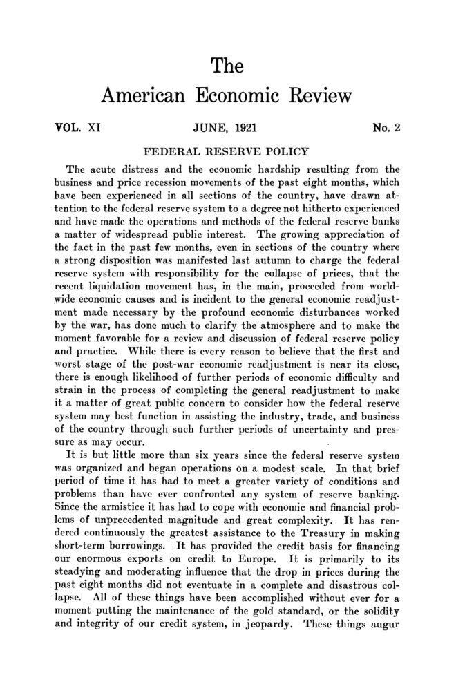

Miller e o coeficiente de reservas que avisa tarde
Leitura: 9 min
Membro do Federal Reserve Board, A. C. Miller revê as políticas de ouro, moeda e crédito desde 1914, explica os juros baixos de 1919 e propõe uma contabilidade que faça as reservas avisarem antes.


Em 1919, o Federal Reserve Board escreveu aos presidentes dos bancos de reserva que estava preocupado com a especulação excessiva e que, em condições normais, a corrigiria elevando a taxa de redesconto, mas que isso não era praticável por causa do financiamento do governo. A. C. Miller, membro do Board, reproduz a carta numa nota do artigo que abre a American Economic Review de junho de 1921. Ela resume o argumento: da entrada na guerra ao fim de 1919, o principal instrumento do banco central esteve a serviço do Tesouro.
O texto se apresenta como continuação de um exame da política de desconto feito por O. M. W. Sprague no número de março da revista. Miller divide a política de um banco central em três atitudes, diante do ouro, da moeda e do crédito, e sustenta que as duas primeiras ganham sentido a partir da terceira. Para ele, regular o fluxo e o volume do crédito é, em última análise, a função primária dos bancos de reserva.
Como o ouro e as notas serviram à política de crédito?
A primeira fase da política do ouro veio com o grande fluxo de metal que chegou aos Estados Unidos depois do início da guerra europeia, e que até o fim de 1916 acrescentou cerca de 1,2 bilhão de dólares ao estoque monetário. Os bancos de reserva não tinham como neutralizar esse ouro. O Board pediu poder para elevar as exigências de reserva dos bancos membros, sem sucesso; em setembro de 1916, uma emenda permitiu que os bancos membros mantivessem todas as reservas nos bancos de reserva. O objetivo era concentrar o ouro e impedir que ele servisse de base a uma expansão indesejada do crédito.
A mesma lógica valia para as notas. Até a entrada na guerra, o Federal Reserve as emitia em troca de ouro, e a nota funcionava, na prática, como um certificado de ouro. Como as notas não contavam como reserva legal dos bancos membros, a troca retirava o ouro do uso bancário. Com a guerra, a lei foi liberalizada para permitir emitir notas contra ouro dado em garantia e para exigir que todas as reservas dos bancos membros ficassem nos bancos de reserva: agora se tratava de juntar ouro para sustentar o crédito que a guerra exigiria. Em junho de 1919, por recomendação do Board, o embargo à exportação de ouro foi suspenso, e o país perdeu 322 milhões de dólares em ouro até o fim do ano.
Por que os juros ficaram baixos em 1919?
A política de crédito, diz Miller, teve importância só teórica nos primeiros anos, por causa da redução das reservas exigidas e da entrada de ouro. Com a guerra, a política de desconto passou a ser tratada como parte da política de empréstimos do Tesouro. Miller cita o governador do Board, numa audiência de dezembro de 1920, que classificou essa política de economicamente insensata: cerca de 18 bilhões de dólares em títulos foram vendidos ao público durante a guerra, o que só seria possível com ajuda dos bancos de reserva a juros baixos. O instrumento foram taxas preferenciais para o papel garantido por títulos e certificados, inferiores aos próprios juros desses títulos.
O artigo explica por que a inflação veio depois do armistício. Durante a guerra, órgãos como o War Industries Board, a Food Administration e o Capital Issues Committee limitavam o uso do crédito na origem. Com o fim das hostilidades, esses controles foram retirados, o poder de compra contido se liberou e, na primavera de 1919, formou-se um mercado de vendedores, com compras para especulação. Miller sustenta que o sistema era a única agência de controle que restara e que setembro de 1919, logo após o pico da dívida pública, teria sido o momento de agir. Entre 19 de setembro e 7 de novembro daquele ano, os empréstimos dos bancos de reserva cresceram mais de 500 milhões de dólares.
As advertências e a chamada ação direta sobre os bancos, prossegue, não deram resultado. A primeira alta, pequena, veio em dezembro de 1919. Em janeiro de 1920, o Board elevou a taxa do papel comercial de 4,75% em dez bancos e 5% em dois para 6% em todos, e no início do verão para 7% nos maiores. Miller contesta Sprague, para quem a alta foi imposta pela posição esgotada das reservas: o ouro do sistema quase não variou, e o coeficiente caía porque os passivos cresciam.
Por que não guiar os juros pelos preços?
Sprague sugerira abandonar o coeficiente de reservas como guia e basear a política de desconto nos efeitos observados do crédito sobre os preços. Miller reconhece o mérito abstrato da ideia e admite que, com o tempo, uma técnica de regulação baseada em índices de preços poderia ser desenvolvida. Mas aponta dois obstáculos. A lei manda fixar as taxas para acomodar o comércio e os negócios, e não autoriza essa regra. E o público americano, diz, tem um medo persistente da contração, visível desde a hostilidade ao Second Bank of the United States em 1833-1834.
“Seria visto como equivalente a instaurar um despotismo do crédito e dos preços.” (“It would be regarded as tantamount to the setting up of a credit and price despotism.”)
A decisão de política, conclui, deve ser um julgamento vivo, não mecânico, que pese o estado dos negócios, dos mercados monetários, o movimento do ouro, as estações, o ciclo, os preços e as reservas. Ainda assim, nenhum indicador sugere tanto quanto uma mudança no coeficiente de reservas. O problema prático, portanto, é torná-lo mais sensível.
Como fazer as reservas avisarem antes?
O modelo é o Banco da Inglaterra sob a lei de 1844: liberdade para conceder crédito e restrição rígida às notas, com reserva de 100% contra novas emissões. Ali, qualquer expansão excessiva logo se traduzia em demanda de dinheiro vivo e em saída de ouro, e a perda de reservas indicava a hora de subir os juros. Miller argumenta que, mesmo num país que usa cheques, a regulação das notas importa, porque a expansão dos depósitos sempre aumenta a demanda por moeda manual, na proporção de cerca de um dólar de moeda para cinco ou seis de crédito. O argumento se resume numa cadeia.
“O poder sobre as reservas é poder sobre o crédito.” (“power over reserves is power over credit.”)
Com a maior parte do mundo fora do padrão-ouro, o mecanismo automático da conversibilidade deixara de funcionar: os fluxos de ouro tinham mão única, e os Estados Unidos acumulavam metal. De 15 de outubro de 1920 a 15 de abril de 1921, o ouro dos bancos de reserva aumentou cerca de 295 milhões de dólares, boa parte vinda das minas sul-africanas pelo mercado de Londres, e o coeficiente dos doze bancos passou de 40,9% para 53,7%.
O plano separa duas reservas. A de depósitos, relativamente constante, seria a reserva de trabalho do departamento de desconto, e qualquer expansão dos empréstimos apareceria logo na queda de seu coeficiente. A de notas absorveria as entradas e saídas de ouro: o ouro novo substituiria outras garantias junto ao Federal Reserve Agent, e as exportações sairiam dela. Pelo cálculo de Miller, a mudança deslocaria cerca de 200 milhões de dólares de ouro e devolveria à nota o caráter de certificado de ouro. O ouro ficaria como super-reserva, à espera do dia em que parte dele voltasse à Europa para restaurar o padrão-ouro. O autor prefere falar em regulação, não em controle: a política deve agir sobre tendências ainda em formação, usando os juros a tempo de evitar níveis extremos.
Na minha leitura
Na minha leitura, o artigo de Miller trata menos de juros do que de informação. Ele aceita que o coeficiente de reservas é um indicador imperfeito, porque mistura o efeito do crédito com o efeito do ouro, mas o conserva porque é o sinal que banqueiros e público entendem e aceitam. A solução é redesenhar a contabilidade para que o número mais visível passe a medir uma só coisa: a expansão dos empréstimos do próprio banco central.
O debate com Sprague expõe um dilema permanente. Uma regra baseada em preços pode ser mais correta em teoria, mas precisa de mandato legal e de apoio público; uma regra baseada em reservas tem legitimidade, mas avisa tarde. A resposta de Miller é aproximar o indicador aceito do objetivo desejado, e não trocar um pelo outro.
Glossário
- Redesconto
- empréstimo do banco central a um banco, garantido por títulos que este já descontou.
- Coeficiente de reservas
- razão entre as reservas do banco central e seus passivos em depósitos e notas.
- Ação direta
- pressão do banco central sobre os bancos para restringir empréstimos especulativos, sem mudar os juros.
- Federal Reserve Agent
- representante do Board em cada banco de reserva, que guardava as garantias das notas emitidas.
- Super-reserva
- expressão de Miller para o ouro excedente guardado contra as notas, à disposição do Board.
Fontes
- Federal Reserve Policy — A. C. Miller (Federal Reserve Board) (pp. 177–206). JSTOR · Internet Archive (PDF)
- Edição completa, com os demais artigos: Nº 170 do Arquivo.
Documento em domínio público (EUA, publicado antes de 1931), via JSTOR Early Journal Content e Internet Archive. Resumo e comentário do autor deste site, sem afiliação com a American Economic Association. Encontrou um erro? Escreva: a correção é publicada no próprio texto, com data.
↑ Nº 170 · Miller, o Federal Reserve e a comercialização agrícola Feis e a indústria britânica entre a deflação e as greves →